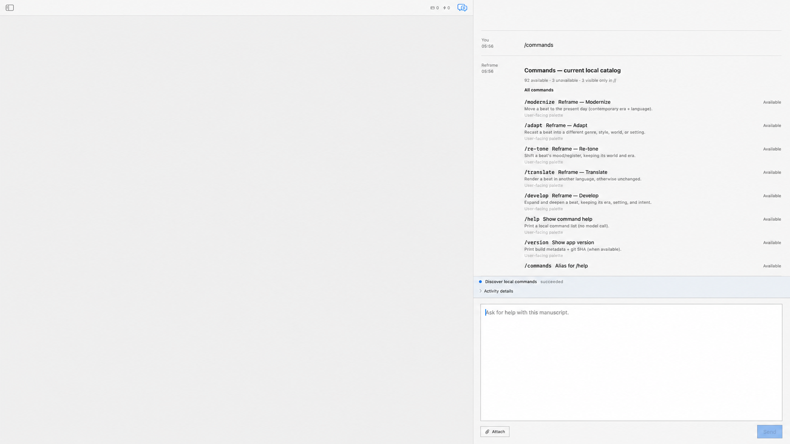

Entries are not powers
Aliases and compatibility spellings count as entries. One governed capability can have several command origins.
/commandsThe live runtime catalog contains 95 command entries: 92 available in the verified Ulysses session and 3 unavailable because their preconditions were absent.
This is an inventory of command spellings, not a release capability list. Read the source document →
The catalog came from app.commands.discover, backed by the FountainStore proof for corpus reframe-ulysses.

Aliases and compatibility spellings count as entries. One governed capability can have several command origins.
Availability means the runtime readiness evaluator accepted the entry for this session. It does not prove every argument or manuscript state.
No released App surface is recorded. The named-build release allow-list remains empty.
Verified catalog projection · Capability boundary · Release surface
/pipeline status reports current pipeline truth; /threads inspects the questions the current reading still holds open; /ground proposes a reading lens, or says why it cannot; /readings compares two readings of the same lines and states what it cannot tell. Each has its own execution/result capture and three-authority live proof.